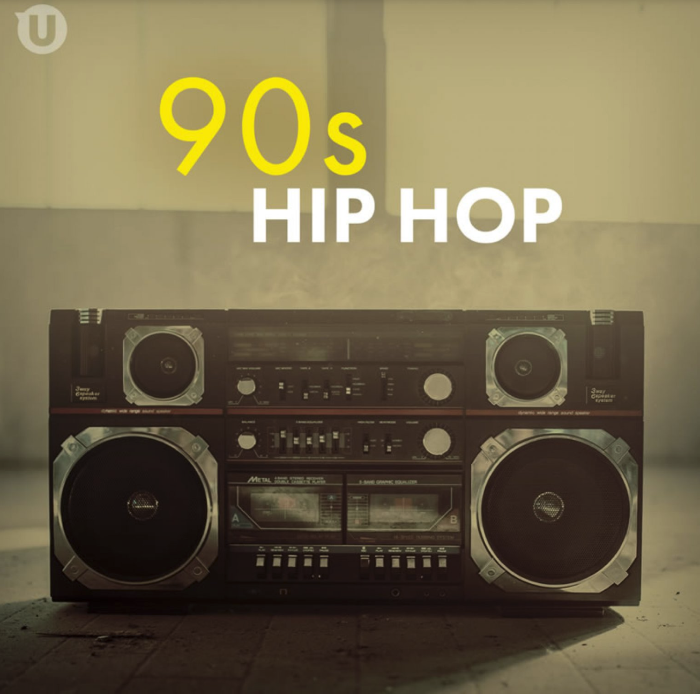

I lived for Hip Hop music in the 90s. It was the music that I related to me the most in my life.
I feel like my parents now educating my youngest daughter on 90s Hip Hop.
I SO many fond memories when reminiscing to 90's Hip Hop.
Here's a list of my favorite tunes!